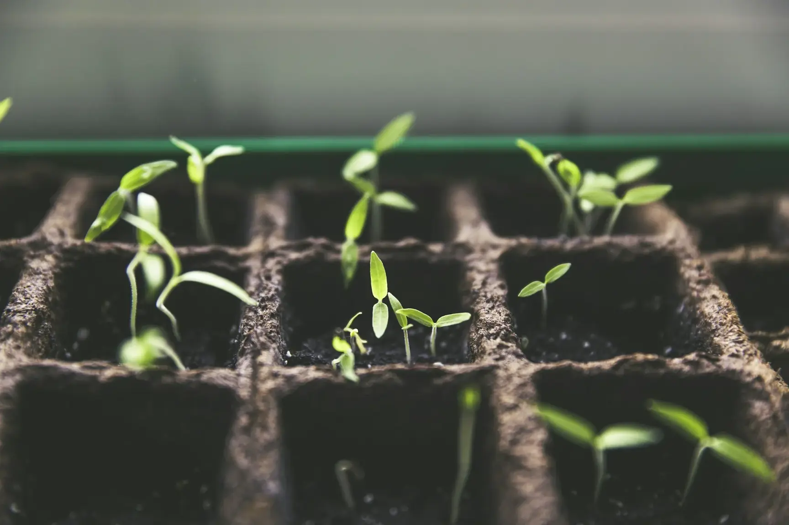

Bypass secateurs
For live wood up to 20mm. A clean bypass cut heals faster than an anvil crush.
Weekly use95%

Seasonal notes from our own gardeners: what to do, what to leave alone, and how to read what your garden is telling you. Practical, unhurried, and entirely peat-free.
Written by working gardeners, not a content team
The same plot asks different things of you each quarter. Choose a season for our working notes.

Spring is a conversation between haste and patience. The garden is moving quickly, but the soil is still cold. Watch, wait, and do less than you think.
High summer is not the time for big moves. Water deeply and less often, deadhead to keep the show going, and let the garden lean into its own abundance.
Warm soil and cool air make autumn the best time to move, divide and plant. Everything you do now is quietly happening underground until spring.
With the leaves gone, a garden shows its structure. Winter is for pruning, protecting, and drawing next year's garden by the fire.
You do not need a shed full. These are the implements our team reaches for every week — and how much of the job each one really does.
For live wood up to 20mm. A clean bypass cut heals faster than an anvil crush.
Plant, weed, divide and measure in one. The most quietly useful thing in the shed.
Narrow, sharp and light. For planting, lifting and turning compost without wrecking your back.
For leaves, thatch and seedbed preparation. Fan-shaped tines are gentler than a plastic rake.
A fine rose for seedlings and a coarse one for established pots. Never a hose on new seed.
Leather for pruning, nitrile for fine work. Clean, dry and paired — every time.
Reliable, beautiful and generous to wildlife. Start here if you are building a border from scratch.
A healthy garden has some holes in its leaves. Intervene only when the plant — or the harvest — is genuinely at risk.
Encourage ladybirds and hoverflies; a strong jet of water is often enough. Avoid sprays that kill the predators too.
Low riskCheck containers in autumn. Nematodes work best in warm, moist soil; repeat in spring if the larvae persist.
Container riskInspect hedges from spring. Pheromone traps and hand removal are the first response; avoid broad-spectrum chemicals.
Watch closelyDeeply and less often is almost always better than a daily sprinkle. For the first season, water new trees and shrubs twice a week in dry weather, directing water slowly to the root ball. Established borders usually need help only in prolonged drought.
No. Leaving seed heads and hollow stems through winter feeds birds, shelters insects and protects crowns from frost. Cut back in late winter or early spring, just as new growth begins. A few tidy edges are fine — the garden does not need to look abandoned.
It means no peat is used in the compost, soil conditioners or potting mixes we specify. Peat-free mixes behave differently — they often need more careful watering at first — but with the right approach they perform beautifully and protect fragile peat bogs.
Yes, and you should. Collect leaves into a simple wire cage or old compost sack, keep them damp, and leave them for one to two years. Oak, beech and hornbeam make the best leaf mould; sycamore and horse chestnut break down more slowly.
Look, smell and dig. Healthy soil is dark, crumbly, full of roots and worms, and smells faintly of woodland after rain. If it is compacted, pale or lifeless, add organic matter, avoid digging when wet, and give it a season of mulch and green manure.
We offer online garden consultations and written care plans for gardens outside our travel area, but hands-on care is limited to London, the Home Counties and the Cotswolds. Book a consultation and we will be honest about what is possible.
Our care plans bring the right pair of hands through the year — pruning, feeding, editing and quietly improving.